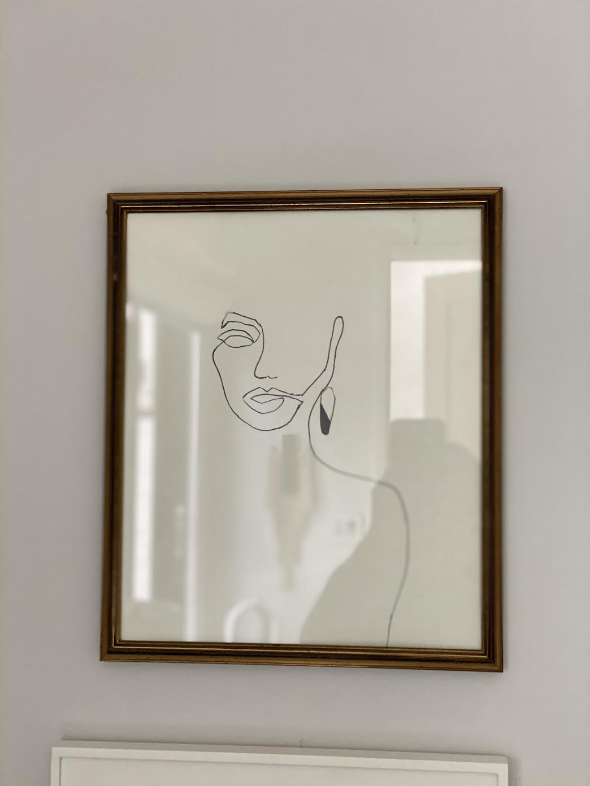

My name is Schuyler and I love to do art. I do it all the time, whenever I can.
Here are some examples of art I have done recently:


I get a lot of my ideas from a website called Anthropologie.
Once I find my inspiration (Anthropologie, YouTube, etc.), I make a plan of what I am going to make. Then I'll reference my inspo when I make my pencil sketch. Once I'm happy with the first design (which can take a while), I'll darken the lines and then start to add all of the details with paint, sharpie, colored pencils, i.e., what ever medium I'm using to create the piece. For the woven macrame wall hanging (right), I love to try new knot styles and different techniques.